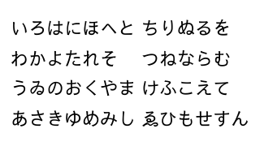
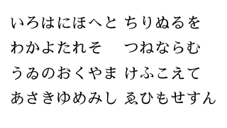

概要
さわらびフォントは、フリーなライセンスで提供している日本語フォントです。現在、ゴシック体のさわらびゴシックと明朝体のさわらび明朝の 2 種類のフォントを公開しています。
なお、公開しているとはいえ、現在のところどちらのフォントも開発中という段階です。残念ながら、現状では通常用途に必要な漢字なども十分には揃っていません（ない文字は、ご利用の OS によっては自動補完が働き、別フォントで表示されるかと思います）。ご利用の際はあらかじめご了承ください。
さわらびフォントは、フリーなライセンスで提供している日本語フォントです。現在、ゴシック体のさわらびゴシックと明朝体のさわらび明朝の 2 種類のフォントを公開しています。
なお、公開しているとはいえ、現在のところどちらのフォントも開発中という段階です。残念ながら、現状では通常用途に必要な漢字なども十分には揃っていません（ない文字は、ご利用の OS によっては自動補完が働き、別フォントで表示されるかと思います）。ご利用の際はあらかじめご了承ください。
さわらびフォントのライセンスは、Creative Commons Attribution 3.0 です。このライセンスの内容は、以下のリンクからご覧いただけます。
さわらびゴシック（ver.20140215）の書体見本です。
さわらび明朝（ver.20140315）の書体見本です。
下のリンクから各フォントをダウンロードすることができます。なお、さわらびゴシックが sawarabi-gothic、さわらび明朝が sawarabi-mincho に対応しています。
以下のページで、さわらびゴシックの“試し書き”ができます。
試し書きができる、と書きましたが、つまりは、自由に入力した任意の文字列をさわらびゴシックで表示できるようにした、簡単なウェブアプリケーションが用意してあるということです。さわらびゴシックのデザインがどうなっているのか、もっといろんな文字で見てみたいとき、気になる文字がさわらびゴシックに入っているのかどうか確認してみたいときなど、ご利用いただければと思います。
なお、こちらのページでは JavaScript が動かせるようになっている必要があります。また、Internet Explorer ではキレイな表示結果が得られません。お試しには、Mozilla Firefox や Safari、Google Chrome などをお勧めいたします。